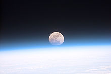

La Terra è il terzo pianeta in ordine di distanza dal Sole e il più grande dei pianeti terrestri del sistema solare, sia per massa sia per diametro.
È il luogo primigenio degli esseri umani e nel quale vivono tutte le specie viventi conosciute, l'unico corpo planetario del sistema solare adatto a sostenere la vita come da noi concepita e conosciuta. Sulla sua superficie, si trova acqua in tutti e tre gli stati (solido, liquido e gassoso) e un'atmosfera composta in prevalenza d'azoto e ossigeno che, insieme al campo magnetico che avvolge il pianeta, protegge la Terra dai raggi cosmici e dalle radiazioni solari.
 La sua formazione è datata a circa 4,54 miliardi di anni fa. La Terra possiede un satellite naturale chiamata Luna la cui età, stimata analizzando alcuni campioni delle rocce più antiche, è risultata compresa tra 4,29 e 4,56 miliardi di anni. L'asse di rotazione terrestre è inclinato rispetto alla perpendicolare al piano dell'eclittica: questa inclinazione combinata con la rivoluzione della Terra intorno al Sole causa l'alternarsi delle stagioni.
Le condizioni atmosferiche primordiali sono state alterate in maniera preponderante dalla presenza di forme di vita che hanno creato un diverso equilibrio ecologico plasmando la superficie del pianeta. Circa il 71% della superficie è coperta da oceani di acqua salata e il restante 29% è rappresentato dai continenti e dalle isole.
La superficie esterna è suddivisa in diversi segmenti rigidi detti placche tettoniche che si spostano lungo la superficie in periodi di diversi milioni di anni. La parte interna, attiva dal punto di vista geologico, è composta da uno spesso strato relativamente solido o plastico, denominato mantello, e da un nucleo diviso a sua volta in nucleo esterno, dove si genera il campo magnetico, e nucleo interno solido, costituito principalmente da ferro e nichel. Tutto ciò che riguarda la composizione della parte interna della Terra resta comunque una teoria indiretta ovvero mancante di verifica e osservazione diretta.
Importanti sono le influenze esercitate sulla Terra dallo spazio esterno. Infatti la Luna è all'origine del fenomeno delle maree, stabilizza lo spostamento dell'asse terrestre e ha lentamente modificato la lunghezza del periodo di rotazione del pianeta rallentandolo; un bombardamento di comete durante le fasi primordiali ha giocato un ruolo fondamentale nella formazione degli oceani e in un periodo successivo alcuni impatti di asteroidi hanno provocato significativi cambiamenti delle caratteristiche della superficie e ne hanno alterato la vita presente
La sua formazione è datata a circa 4,54 miliardi di anni fa. La Terra possiede un satellite naturale chiamata Luna la cui età, stimata analizzando alcuni campioni delle rocce più antiche, è risultata compresa tra 4,29 e 4,56 miliardi di anni. L'asse di rotazione terrestre è inclinato rispetto alla perpendicolare al piano dell'eclittica: questa inclinazione combinata con la rivoluzione della Terra intorno al Sole causa l'alternarsi delle stagioni.
Le condizioni atmosferiche primordiali sono state alterate in maniera preponderante dalla presenza di forme di vita che hanno creato un diverso equilibrio ecologico plasmando la superficie del pianeta. Circa il 71% della superficie è coperta da oceani di acqua salata e il restante 29% è rappresentato dai continenti e dalle isole.
La superficie esterna è suddivisa in diversi segmenti rigidi detti placche tettoniche che si spostano lungo la superficie in periodi di diversi milioni di anni. La parte interna, attiva dal punto di vista geologico, è composta da uno spesso strato relativamente solido o plastico, denominato mantello, e da un nucleo diviso a sua volta in nucleo esterno, dove si genera il campo magnetico, e nucleo interno solido, costituito principalmente da ferro e nichel. Tutto ciò che riguarda la composizione della parte interna della Terra resta comunque una teoria indiretta ovvero mancante di verifica e osservazione diretta.
Importanti sono le influenze esercitate sulla Terra dallo spazio esterno. Infatti la Luna è all'origine del fenomeno delle maree, stabilizza lo spostamento dell'asse terrestre e ha lentamente modificato la lunghezza del periodo di rotazione del pianeta rallentandolo; un bombardamento di comete durante le fasi primordiali ha giocato un ruolo fondamentale nella formazione degli oceani e in un periodo successivo alcuni impatti di asteroidi hanno provocato significativi cambiamenti delle caratteristiche della superficie e ne hanno alterato la vita presente
Modelli chimici basati sull'attuale abbondanza di isotopi radioattivi con lunghissimi tempi di decadimento e l'analisi composizionale di materiale non differenziato proveniente da meteoriti e dalla Luna datano la formazione della Terra a 4,54 miliardi di anni fa. La difficoltà principale nella determinazione dell'età della Terra è legata al fatto che nessuna roccia attualmente affiorante sul pianeta presenta questa età; ciò è dovuto alla natura fluida o plastica della totalità della crosta terrestre durante il primo miliardo di anni circa. Inoltre processi di differenziazione magmatica separavano in questa prima fase i vari elementi concentrandone solo alcuni all'interno della crosta terrestre. Questo frazionamento rende difficile stabilire con esattezza il contenuto iniziale di alcuni geocronometri e pertanto non è possibile calcolare con esattezza le abbondanze iniziali. Le rocce più antiche rinvenibili sul pianeta sono rocce continentali, si ritrovano nei cratoni e hanno un'età pari a 4,1 miliardi di anni. La maggior parte della crosta oceanica è più giovane, perché continuamente riciclata dai meccanismi legati alla tettonica delle placche: le rocce più antiche in questo tipo di crosta sono giurassiche e hanno un'età di 100 milioni di anni. L'età della Terra fu determinata da Clair Patterson nel 1953 utilizzando metodi radiometrici legati al decadimento dell'uranio.
La Terra è il maggiore sia per dimensione sia per massa dei quattro pianeti terrestri (insieme a Mercurio, Marte e Venere), composto per lo più da roccia e silicati; questo termine è contrapposto a quello di giganti gassosi, pianeti appartenenti al sistema solare esterno. Sempre tra i pianeti terrestri è quello con la maggiore densità, la più alta gravità e il più forte campo magnetico. La forma della Terra è simile ad uno sferoide oblato. Più precisamente si dice che sia un geoide, solido che per definizione ha  la forma della Terra. Un geoide è molto simile ad un ellissoide generato dalla rotazione di un'ellisse, detto ellissoide di riferimento, attorno al proprio asse minore rispetto al quale il geoide ha uno scostamento massimo di 100 metri. Il diametro medio dell'ellissoide di riferimento è circa 12 742 km, tuttavia in maniera più approssimativa si può definire come 40 009 km/π, dato che il metro è stato originariamente definito come 1/10 000 000 della distanza tra l'equatore ed il polo Nord passando per Parigi. L'interno della Terra, detto anche geosfera, è costituito da rocce di diversa composizione e fase (solida, principalmente, ma talvolta anche liquida). Grazie allo studio dei sismogrammi si è giunti a considerare l'interno della terra suddiviso in una serie di gusci; difatti si è notato che le onde sismiche subiscono fenomeni di rifrazione nell'attraversare il pianeta. La rifrazione consiste nella modifica della velocità e della traiettoria di un'onda quando questa si trasmette a un mezzo con differente densità. Si sono potute così rilevare superfici in profondità in cui si verificano una brusca accelerazione e una deviazione delle onde e in base a queste sono state identificate quattro zone sferiche concentriche: la crosta, il mantello, il nucleo esterno e il nucleo interno.
© Copyright "Astronomy", 2018